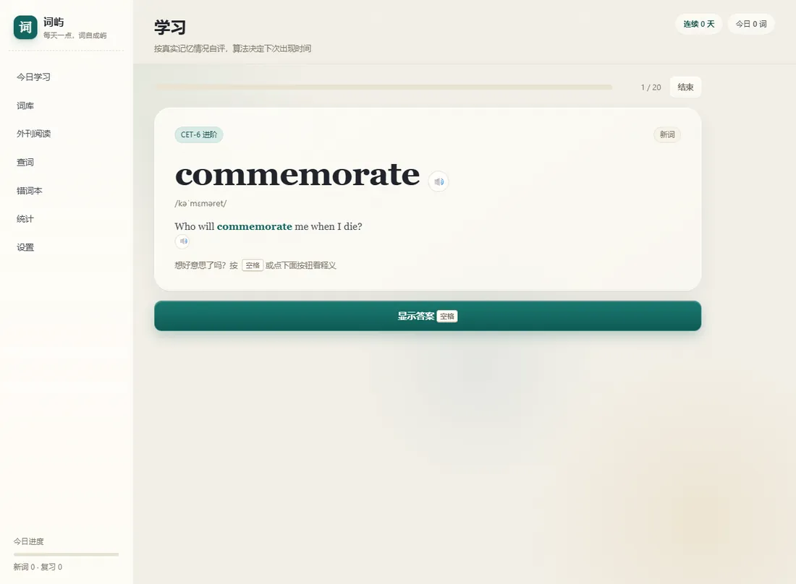
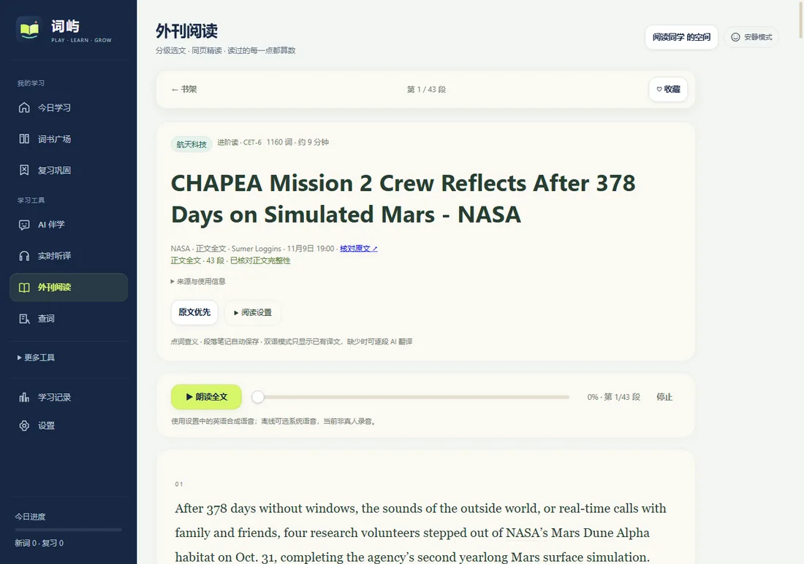
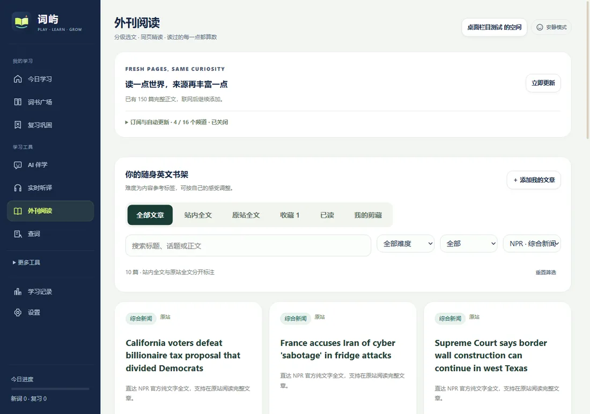
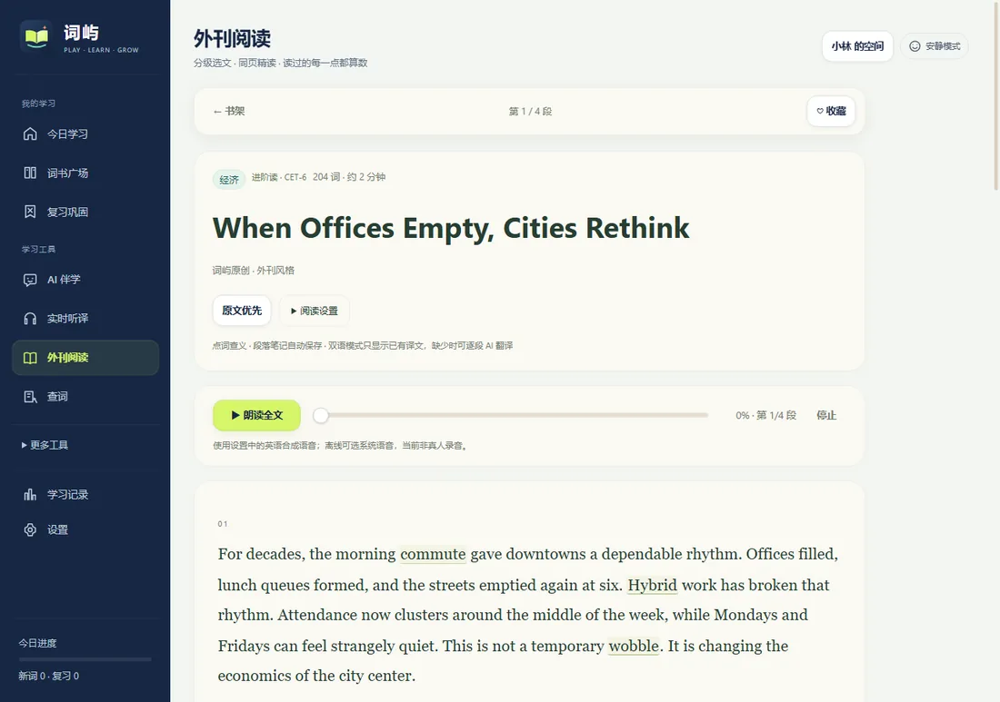
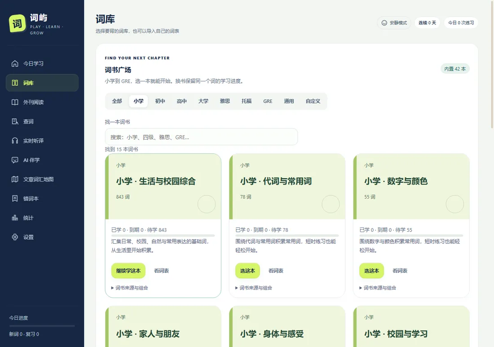

口语对练 3.9.56 新增
左侧打开「口语对练」，点「开始通话」就能用英语自由聊天：本地识别、小屿语音回复，可静音、挂断或在小屿回复时点「我来说」接过话轮。挂断后能点最后一句旁的「纠正上一句」，改完听写再让它重新接话。
离线优先 · 口语对练 · v3.9.56
词屿是一款离线可用的英语学习桌面应用：42 本词书、770,610 条本地词条、16 个外刊来源与 150 篇官方全文，文章可以直接在软件里读完，也能打开「口语对练」和小屿用英语聊天。本机账号加密保存学习记录，本地 AI 伴学与离线翻译随包运行，不把资料发到外部服务。
为什么是词屿
不追求花哨的排行榜，只把「今天该复习哪几个词」「这篇外刊怎么读完」「这句英语怎么说」做顺。
左侧打开「口语对练」，点「开始通话」就能用英语自由聊天：本地识别、小屿语音回复，可静音、挂断或在小屿回复时点「我来说」接过话轮。挂断后能点最后一句旁的「纠正上一句」，改完听写再让它重新接话。
首页选择课堂 / 小组讨论 / 面试场景，用最近学过的词完成一句表达；可以检查用词、听合成朗读，或请本地 AI 解释并改写。草稿与建议随账号保存，从薄弱词入口继续复习。
ScienceDaily、NPR、Smithsonian、Science News Explores 等来源的文章，点「阅读全文」就在词屿自己的窗口里打开官方完整页面：后退、前进、重新加载、原版页面与文字缩放都在。
8 家媒体与机构、16 个订阅频道；150 篇经完整性校验的官方正文，从原网页正文区域提取到最后一段，支持点词查义、段落笔记、收藏与离线阅读。NPR 栏目「显示 0 篇」的问题已修复。
其中 767,532 条含中文释义，常用 65,000 条支持中文反查；音标、词性、释义与例句离线可用。record、read 等 21 组同形异音词可按词性展开英式 / 美式读音。
小学、初高中、四六级、考研、雅思、托福、GRE 与牛津 / 柯林斯词表分册，74,278 条收录、16,521 个去重词形；42 本词书补齐英美音标，SM-2 间隔复习只复习该复习的词。
随包内置 Whisper base.en、Kokoro 英 / 美音色、Opus-MT 轻量英译中与 Silero VAD；生成式伴学、自由对话、增强听写使用可选「词屿离线增强包」（Qwen3-4B + Hy-MT2）。Windows x64 CPU 推理，不需要 Ollama / Python / CUDA。
注册即得 WI- 开头的本机 ID，学习进度、笔记与资料按账号加密保存；支持记住密码 / 自动登录、锁定、恢复密钥与 .wiaccount 加密备份。不上传账号服务器。
翻卡、四选一、例句填空、拼写、听写；五词小循环按「认识它 → 换个方式想起 → 独立写出来」推进，错词本可直接针对性补练，学习记录页有每日报告与薄弱词排行。
单词可试听英音或美音，0.5–2.0 倍语速；整句用微软在线神经语音或百度翻译，断网回退系统语音。朗读高亮不再遮挡段首，答题提示是约 0.7 秒的柔和琴音，可关。
界面





下载
安装包与绿色版已内置全部词书、全文数据与轻量语音 / 翻译模型，核心功能完全离线。生成式伴学、自由对话等按需下载「词屿离线增强包」。所有文件统一由 GitHub Releases 分发。
v3.9.56 · x64 · 492 MB
下载 Windows 安装包双击安装，按提示选择安装位置（默认 %LOCALAPPDATA%\Programs\WordIsle），桌面与开始菜单自动创建快捷方式。升级安装会保留本机账号与学习记录，卸载同样保留。可执行文件没有 CA 代码签名，SmartScreen 可能提示「未知发布者」：点「更多信息 → 仍要运行」。
v3.9.56 · x64 · 527 MB
下载绿色版 ZIP解压到任意目录（例如 D:\词屿体验版），双击 WordIsle.exe 即可运行。请保留整个文件夹，本地模型和运行组件都在 resources 里；首次打开会进入注册 / 登录。
Qwen3-4B / Hy-MT2 / Whisper small · 3.73 GB
第 1 卷 · 1.46 GB 第 2 卷 · 1.46 GB 第 3 卷 · 816 MBGitHub 单文件上限 2 GB，所以按 1.5 GB 分卷。三个分卷放在同一目录，用 7-Zip 打开第 1 卷 .001 解压；把解压出的「词屿离线增强包」文件夹与词屿的程序文件夹放在同一父目录（例如与 D:\词屿体验版 并列），再重新打开词屿。不装也能正常背词、查词、阅读与听写。
Apple 芯片 / Intel · 需在 macOS 上打包
查看说明macOS 包必须在 Mac 上构建（Apple 工具链限制）。项目已带构建脚本与 GitHub Actions 工作流，拿到 Mac 或云端即可生成 DMG。
%APPDATA%\WordIsle-Contest-Preview，与旧的 3.9.x 安装版互不影响；可在设置里导出 / 导入加密备份。version.json 检查新版本；词书与全文随版本更新；外刊按 6 / 12 / 24 小时检查，最多保留 1500 条公共缓存。常见问题
目前个人使用免费。商业使用或二次分发请联系站点邮箱说明用途；源码许可见仓库的 LICENSE。
安装版会有桌面 / 开始菜单快捷方式和卸载入口，默认装到 %LOCALAPPDATA%\Programs\WordIsle；绿色版解压后直接双击 WordIsle.exe，不写安装记录。两者的功能、数据目录和账号完全一致，升级都保留学习记录。
跳到 GitHub Releases 的固定直链：安装包 releases/latest/download/WordIsle-3.9.56-preview-Setup-x64.exe，绿色版 releases/latest/download/WordIsle-3.9.56-preview-win-x64.zip。如果浏览器拦截了跳转，也可以直接打开 Releases 页面 手动下载。
下载全部 3 个分卷（.001 / .002 / .003），放在同一目录，用 7-Zip 打开 .001 解压，得到「词屿离线增强包」文件夹。把它和词屿的程序文件夹放在同一个父目录下（例如 D:\词屿离线增强包 与 D:\词屿体验版 并列），重新打开词屿即可使用 Qwen3-4B 伴学、Hy-MT2 翻译与增强听写。缺少分卷时无法完整解压。
使用独立数据目录 %APPDATA%\WordIsle-Contest-Preview，默认不读写旧版的学习记录。需要迁移时，可在注册时勾选迁入旧版本机记录，或先在旧版「设置 → 导出学习 JSON」再导入。
核心功能（词书、查词、全文阅读、练习、复习、本地 AI）完全离线。在线朗读、外刊更新与「原站全文」需要网络；断网时朗读回退系统语音，已缓存的正文照常可读。检查更新只读取 version.json，不会上传本机数据。
不会。注册的是本机账号，学习进度、生词本、笔记与设置加密保存在本机，不上传账号服务器、不自动跨设备同步。本地 AI 推理不外发资料；只有主动选择在线 API 模式时才按界面中的发送确认发出。
可执行文件没有购买 CA 代码签名证书。选择「更多信息 → 仍要运行」即可；要彻底消除提示需要购买 OV/EV 代码签名证书。
源代码已适配 macOS（双架构、标准菜单、DMG 配置），但安装包必须在 Mac 上构建。项目里提供了 build-macos.sh 与 GitHub Actions 工作流，可自行生成 DMG。
可以。词书广场可新建 / 删除个人词库；设置支持导入 XLSX、TXT、CSV 或 JSON（Excel 读取第一个工作表，至少含「单词」「释义」两列），也可以把查词时收藏的词当普通词库练习。
当前不接入任何统计或广告脚本。如果之后启用隐私友好的访问统计，会在本页说明。
许可与致谢
词库释义与语料来自开源项目与公共领域作品；不是牛津词典原文。